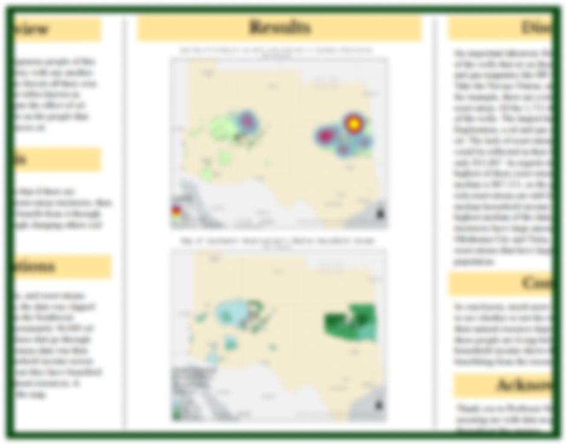
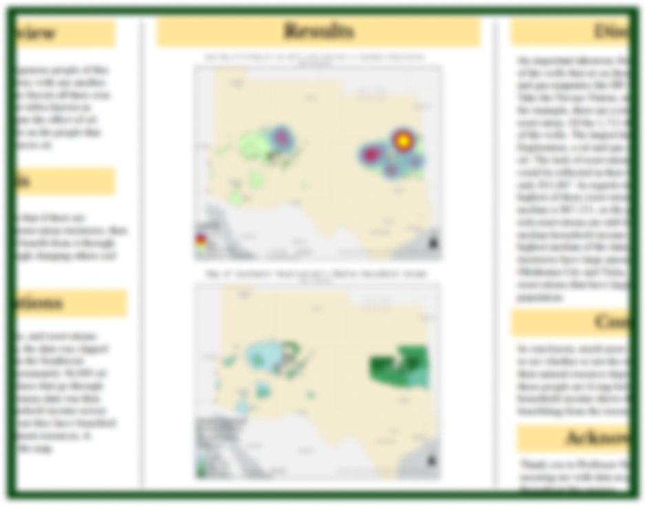

This page is a showcase of past and present projects. They include projects from my time at Vanderbilt and personal passion projects and range in a wide variety of topics from Data Analysis, GIS, Drawings, and whatever new hobby I am into at the time. I hope you enjoy checking these out as much as I did working on them!

Solar Energy Potential Research in
Glover Park, Washington D.C.
Using ArcGIS and the
Suitability
Modeler
NBA GM For A Day:
An investigation of Offensive Rebounding
Percentage as a Primary Metric for
Assessing
Potential Players
 

Logistical Regression Analysis
to Classify Heart Disease Patients
Based on Key Variables
Terrain Derivatives of the
Tennessee Smokey Mountains
National Park
Final Research Project
ANTH 3261: Intro to GIS/Remote Sensing:
Oil and Gas on Native
Reservations

Cities: Skylines II Gameplay:
Custom made community garden lined by medium density housing. Loosely
inspired by South End, Boston.